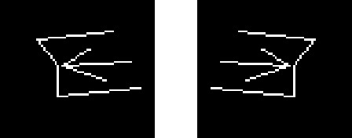

| 命令名称 | Filter_Mirror 固定镜像 |
| 命令功能 | (通用图像处理)按一定方向镜像图像 |
| 语法格式 | TURING.Filter_Mirror(Direction) |
| 参数说明 | Direction：整数型，镜像的方向（默认0水平镜像，1垂直镜像，2水平和垂直同时镜像） |
| 返回值 | 无 |
| 按键精灵 |
复制代码
'获取图像数据 Call TURING.Pixel_FromScreen(0, 0, 500, 300) '水平镜像 Call TURING.Filter_Mirror(0) '显示图像效果预览 Call TURING.Pixel_Preview() |
| 滤镜效果 |  |